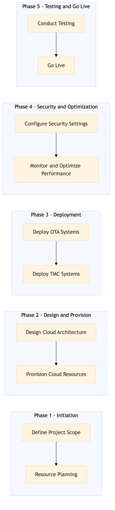

This process document outlines the Cloud Infrastructure Management for AWS and Azure, focusing on ensuring high availability, scalability, and security for both OTA and TMC systems.
| Trigger | Initiation of a new cloud infrastructure project or detection of an issue in existing infrastructure. |
| Outcome | A stable, secure, and scalable cloud environment that supports all required OTA and TMC systems with minimal downtime and optimal performance. |
| Systems | AWS Azure |

Click to enlarge
| Step | Name & Pain Point | Role | System | Input | Output | KPI | Flags |
|---|---|---|---|---|---|---|---|
| 1.1 | Define Project Scope Unclear business requirements | Project Manager | N/A | Business requirements, system list (OTA and TMC), timeline | Project scope document | Scope defined within 2 weeks | ◆ Decision |
| 1.2 | Resource Planning Insufficient resources | Project Manager, IT Infrastructure Lead | N/A | Project scope document | Resource allocation plan | Resources allocated within 1 week | ◆ Decision |
| 2.1 | Design Cloud Architecture Complex system integration | Cloud Architect | AWS, Azure | Project scope document, resource allocation plan | Cloud architecture design document | Architecture designed within 3 weeks | ◆ Decision |
| 2.2 | Provision Cloud Resources Resource provisioning delays | Cloud Engineer | AWS, Azure | Cloud architecture design document | Provisioned cloud resources | Resources provisioned within 4 weeks | ◆ Decision |
| 3.1 | Deploy OTA Systems System compatibility issues | DevOps Engineer, System Administrator | Expedia Open World, Partner Central, Amadeus NDC, Sabre GDS, Travelport, EVC, One Key, TravelAds, AWS SageMaker, Snowflake, Kafka, Salesforce, Tableau | Provisioned cloud resources, system deployment scripts | OTA systems deployed and running | OTA systems deployed within 6 weeks | ◆ Decision |
| 3.2 | Deploy TMC Systems System compatibility issues | DevOps Engineer, System Administrator | Concur T2, Concur Expense, Amex GBT Neo/Complete, Amadeus GDS, S/4HANA, International SOS, Cvent, Amex Corporate Card, VCN, Analytics Cloud, Workday | Provisioned cloud resources, system deployment scripts | TMC systems deployed and running | TMC systems deployed within 6 weeks | ◆ Decision |
| 4.1 | Configure Security Settings Security breaches | Security Engineer | AWS, Azure | Cloud architecture design document | Configured security settings | Security settings configured within 2 weeks | ◆ Decision |
| 4.2 | Monitor and Optimize Performance Performance degradation | DevOps Engineer, System Administrator | AWS, Azure | Deployed systems | Performance monitoring and optimization reports | Performance optimized within 4 weeks | ◆ Decision |
| 5.1 | Conduct Testing Test failures | QA Engineer, System Administrator | All systems (OTA and TMC) | Deployed systems | Testing reports | Testing completed within 3 weeks | ◆ Decision |
| 5.2 | Go Live Deployment issues | Project Manager, IT Infrastructure Lead | All systems (OTA and TMC) | Testing reports | Systems go live | Go live within 1 week after testing completion | ◆ Decision |